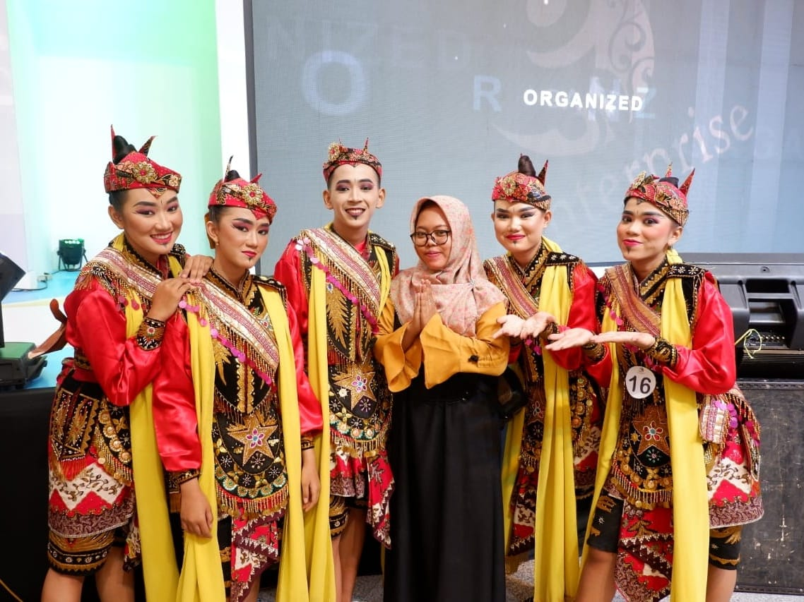
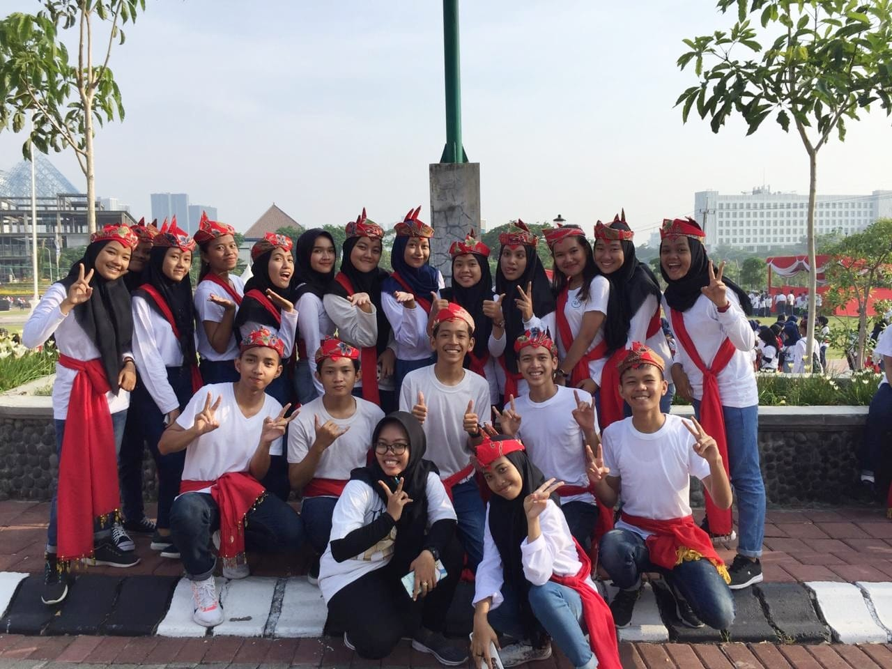
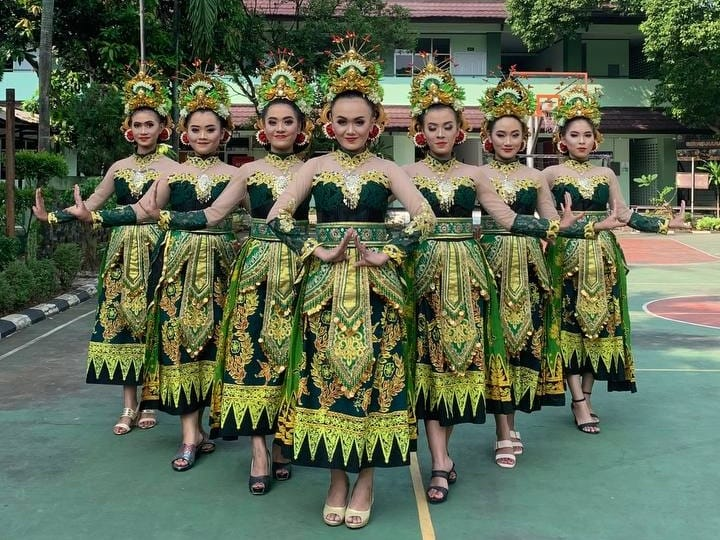
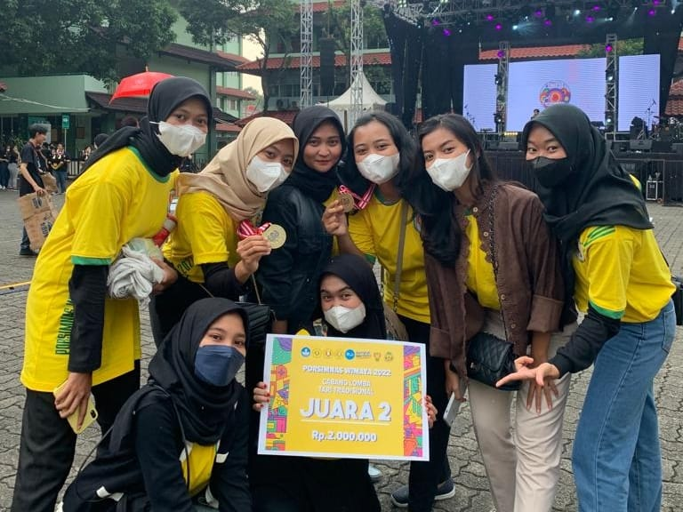
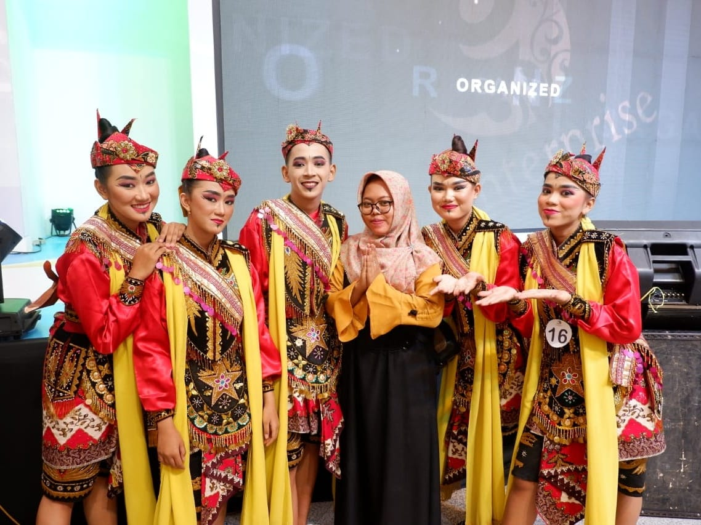
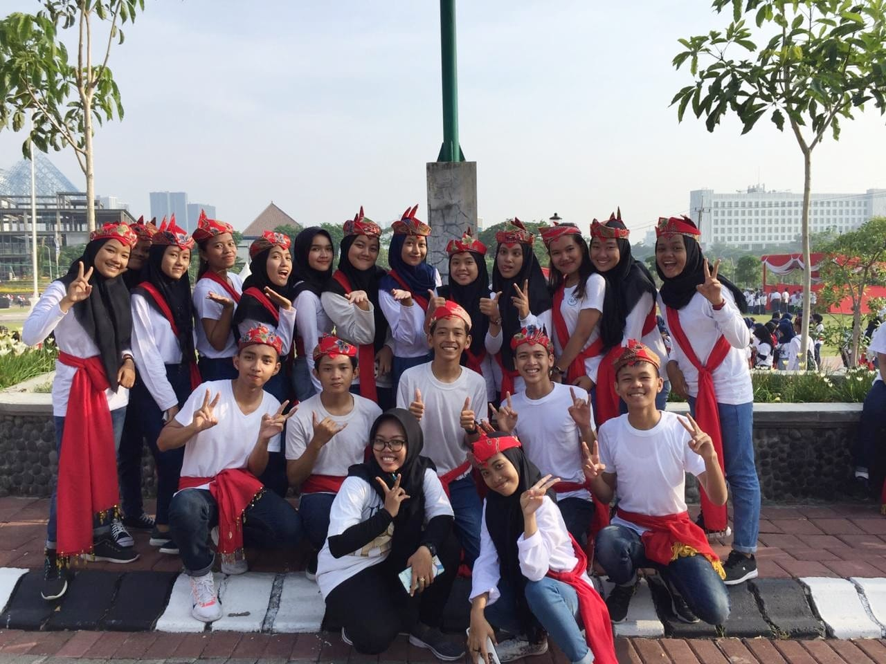
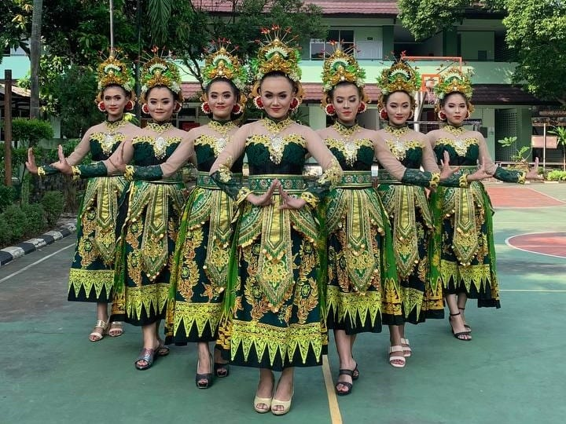
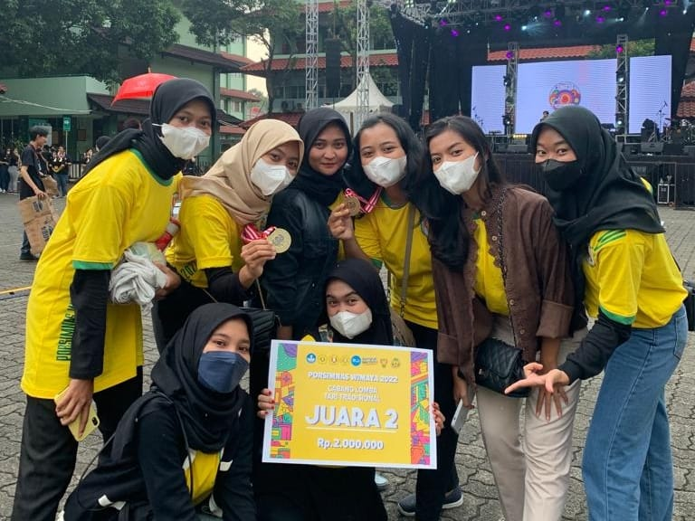

Hi Readers!!
Kenalin aku Dea Puspita Anggraeni, 19 tahun. Domisiliku di Sidoarjo, aku penggemar mie ayam pangsit dan es degan. Hobi banget kalau disuruh nari atau nyanyi walaupun untuk nyanyi suaraku ga bagus. Dari usia 4 tahun aku selalu ikut kegiatan menari di sekolah, sampai saat ini pun masih ikut. Alhamdulillah udah bisa 4 tarian tradisional ada Tari Remo Bolet dari Surabaya, Tari Gandrung Marsan dari Banyuwangi, Tari Sasanjung dari Banyuwangi, Tari Sparkling Surabaya, dan Tari Warak Dugder dari Semarang. Karena banyak kegiatan sekolah dan jarang berolahraga, mengikuti ekstrakurikuler menari adalah salah satu trobosanku untuk bisa tetap bergerak dan membakar lemak.


 






